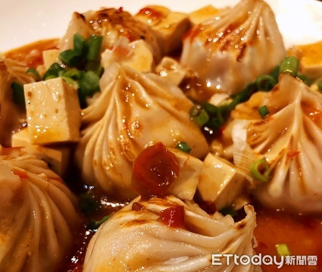

以海鮮痛風麵線顛覆傳統口味及食材，桃園湯包麵線排隊名店再出奇招，
老闆老王將店內受歡迎的鮮蝦、干貝湯包系列改頭換面，將湯包先煎酥脆後，佐以麻婆豆腐、糖醋、咖哩，
更讓湯包的口感及味道更提昇。網友說，腦中立即浮現「給我一碗白飯」、「看到都餓了」、「我要怎麼減肥」。
老王推出龍蝦、天使蝦、螃蟹、生蠔的澎湃海鮮搭配平民小吃的麵線中，不但與傳統口味大異其趣，口味和口感令人耳目一新，
一吃起來就會讓「普林」飆高、痛風發作的海鮮大餐，在中壢區闖出名號，成為排隊名店，為了也將店內受歡迎的鮮肉、
鮮蝦及干貝湯包，一樣改頭換面，讓湯包的吃法更多樣化、更精進、更好吃，於是他將湯包先煎得酥脆再佐以麻婆豆腐、
糖醋、咖哩等口味，吃起來讓湯包的口感及佐料味道融合起來，而且吃起來完全不衝突，同時口感及味道更升級。
